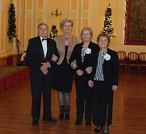
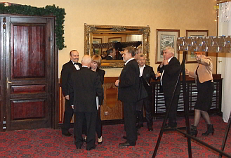
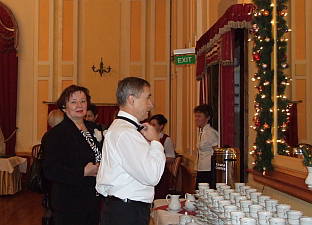
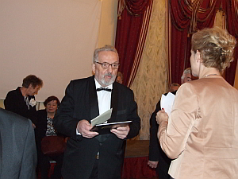
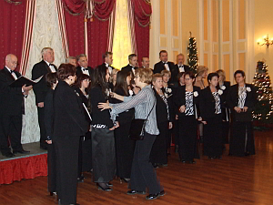
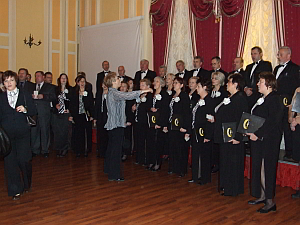
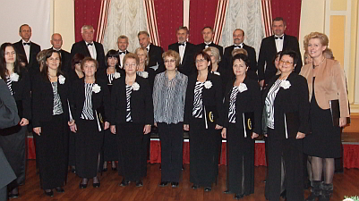
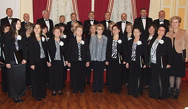
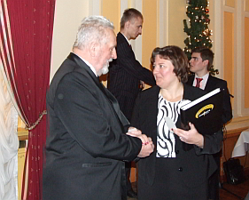

A tymczasem w Cameracie...
.
2011-12-18
Przychodzimy razem z hejnałem z Wieży Mariackiej, czyli o 12. Są już pierwsi chórzyści w świątecznych nastrojach i odświętnych strojach. 
Chwila na przebranie i ubranie. Panowie poprawiają muszki panie bluzeczki i już wszyscy gotowi.
 
Krótka rozśpiewka i czekamy na gości, którzy przybywają tłumnie.

W koło szum, wesoły gwar, idą Święta.
Śpiewamy krótki koncert kolęd.

Próbujemy potem zachęcić polityków do śpiewania, ale nie bardzo nam to wychodzi. Śpiewamy wspólnie kolędę, wysłuchujemy kilku wystąpień i dla nas koniec.
Jeszcze pamiątkowe zdjęcie na prośbę gospodarzy i życzenia świąteczne.
  
Po koncercie wracamy do domu.

© Stowarzyszenie Muzyczne Chór Camerata Wieliczka